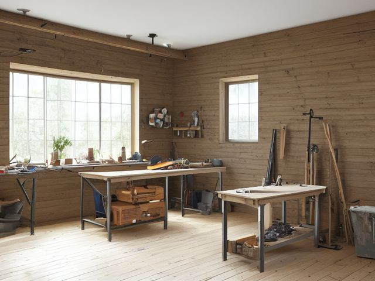

Workshop micro zone
The Main Workbench
The one surface where a project actually gets built, cut, glued, and repaired.
One session: 60-90 min. most of it in Sort, deciding what happens to the half-finished projects living on the bench

What done looks like
A bare bench top except the vise and the task lamp, one project tray holding the current job's parts, and a clear run of bench in front of the vise long enough to lay a board across. Every chisel and square back on its traced outline, the dog holes empty, and no offcuts or glue squeeze-out under the bench.
The six passes, in order
Work them in this order. Sorting after you have arranged things means arranging things you were about to remove.
Sort
Decide what stays. Everything else leaves the zone now.
Clear the bench top and the shelf beneath it completely, then give every half-finished project a verdict: back on the bench with a date, or broken down into parts and stock. Snapped blades, glue bottles gone solid, and brackets you cannot identify leave now.
Straighten
Give what stays a home, placed where the hand actually reaches.
Hang the tools your hand reaches for mid-cut, the marking knife, the combination square, the block plane, within arm's reach of the vise, and put everything you use once a project on the wall behind. Traced silhouettes mean a missing chisel shows up before you finish vacuuming.
Shine
Clean it, and use the cleaning to inspect what you cannot see when it is full.
Vacuum the bench top and the dog holes rather than brushing them out, then scrape dried glue drips off the surface before they telegraph into the next workpiece. Wipe the vise screw and give it a drop of oil.
Safety
Make the zone safe for everybody who uses it, including the shortest person.
Check the vise jaws still bite a test piece without slipping, and move the lamp cord so it does not lie across the part of the bench a handsaw crosses. A chisel lying edge up in an open tray is what your hand finds when you reach across the bench without looking.
Standardize
Write down the best way you know today, so it survives you forgetting.
Trace the outlines on the tool wall in permanent marker so a gap reads as a missing chisel, then take one photo of the cleared bench and tape it at eye level where you stand, because that photo is what bare means here.
Sustain
Attach the reset to something that already happens, so it keeps itself.
The last part of every session is the bench clear down, done before you take your safety glasses off, because once the glasses come off you are finished for the day and you know it.
The project that has been on the bench since spring
You have a half-assembled something occupying your best surface, and you have not touched it in months because the next step is one you are unsure how to do. Here is the rule that settles it: say out loud what the next physical action is and what date this month you will do it. If you cannot name both in one breath, the project is finished. Take it apart, put the hardware back in the fastener drawers, put the stock back on the rack, and let the bench go back to being a bench. Keeping it assembled is not keeping the project alive, it is only keeping the surface unusable.
Check these before you start
- Fall, cut, or crushChisels and marking knives lying edge up in an open tray, and a vise whose jaws have worn smooth enough to release a workpiece mid-cut.
- Water and electricityThe task lamp or a tool cord running across the bench or down onto a damp concrete floor where you stand to work.
Cleaning it properly
Clean the bench to read it. Vacuum the top and the dog holes instead of brushing dust into the next joint, scrape the glue drips before they telegraph into a workpiece, and finish at the vise with a wipe and one drop of oil.
Inspect as you clean. Cleaning is the only time you see the zone empty, so use it.
- A wobble or a racking sway when you lean your weight on the bench, which points to a leg joint or a stretcher bolt working loose.
- The lamp cord or a tool flex with a cracked, stiff, or frayed section where it bends over the bench edge.
- Rust bloom on the vise screw, the bench dogs, or any bare steel fitting, a sign the shop is holding damp.
- A scorch mark or a heat-glazed patch on the top that says a tool or a workpiece has been running hot on this spot.
The standard that keeps it fixed
One project on the bench at a time, and the bench ends every session bare except the vise and the lamp.
Reset trigger. When you reach up to switch off the task lamp, the bench must already be clear, so the clear down happens before the light goes out.
Next in this room
- The Power Tool Storage, the zone after this one
- All 6 micro zones in the Workshop
Related reading
- What is 6S?
- This zone's safety pass, in full
- Is one spot in this zone always the one you skip?
- Why this zone gets messy again
- Decluttering vs. organizing
- Before you buy storage for this zone
- Still does not fit, even after the honest count?
- Does something in this zone actually get used somewhere else?
- Stuck on one item in this zone?
- Written the standard, but nobody else follows it?
- Does everyone in the house agree what "done" looks like here?
- Does more than one person use this zone?
- Found a duplicate of something in this zone?
- Why the standard above names one home per category
- Is the everyday item in this zone actually the easy one to reach?
- Not sure whether to keep something in this zone?
- Does this zone keep running out of something?
- Started this zone and stalled partway through?
When you want it off the screen
Carry The Main Workbench into the room
The method above is complete and free. The Whole House Print Pack puts The Main Workbench and the other 113 micro zones on 684 printable cards, so the steps you just read are not stuck behind a phone screen while your hands are full.
The Print Pack, 19 dollarsOr draw a card free
If The Main Workbench keeps fighting back, the real problem usually sits somewhere else in the room. A one hour virtual consult is 250 dollars: we find the function, the friction and the root cause together, and you keep a written standard for the space. See what a consult covers.